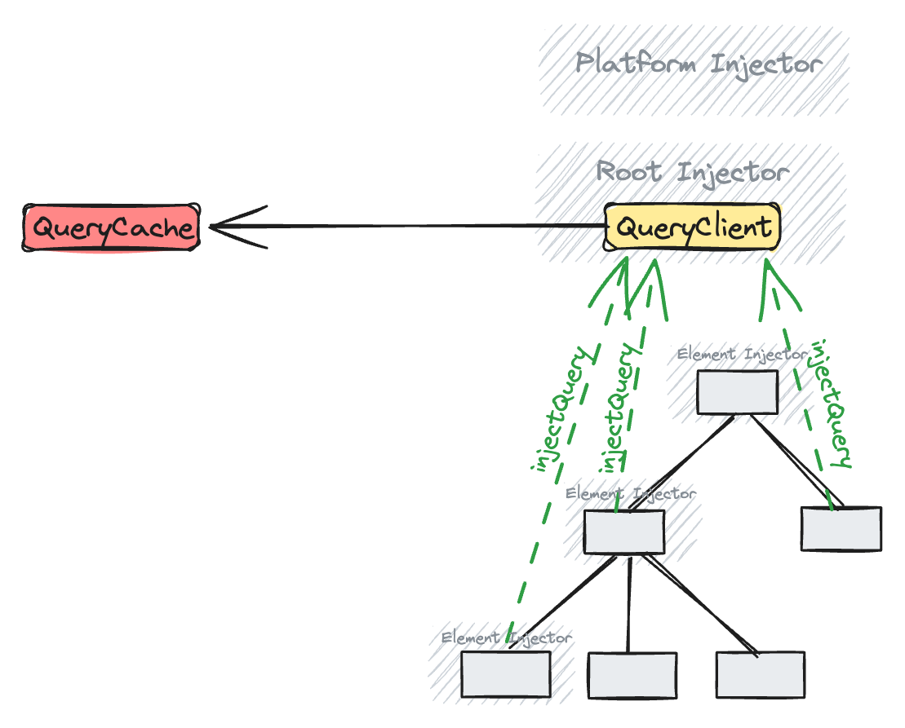
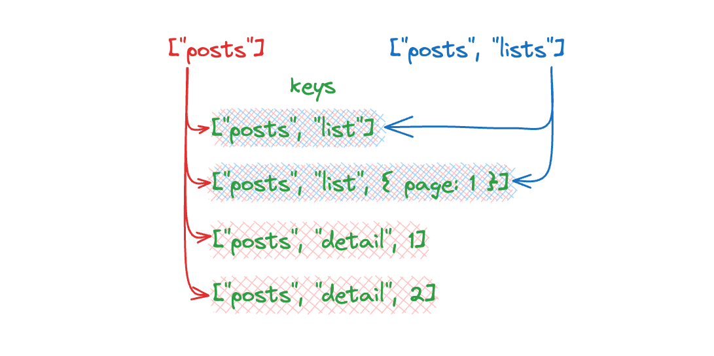
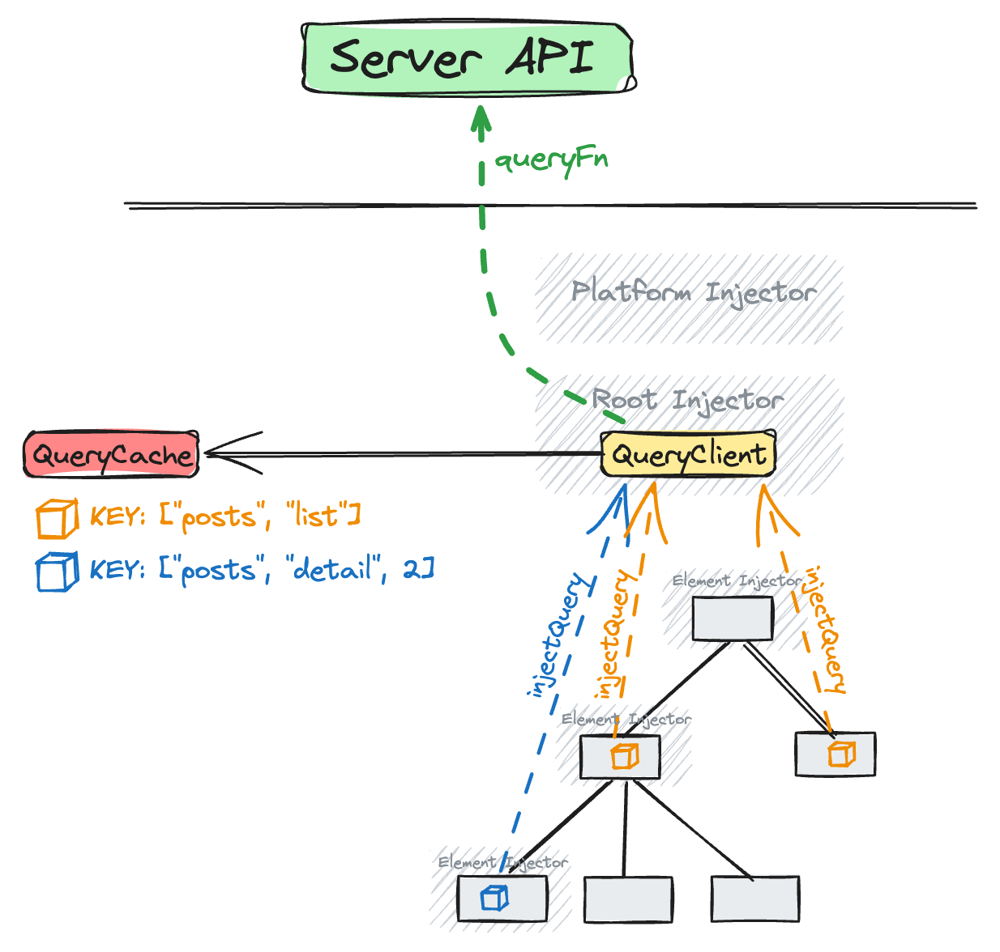
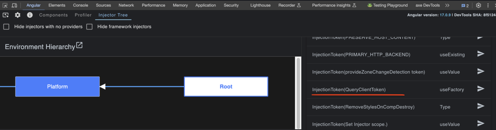
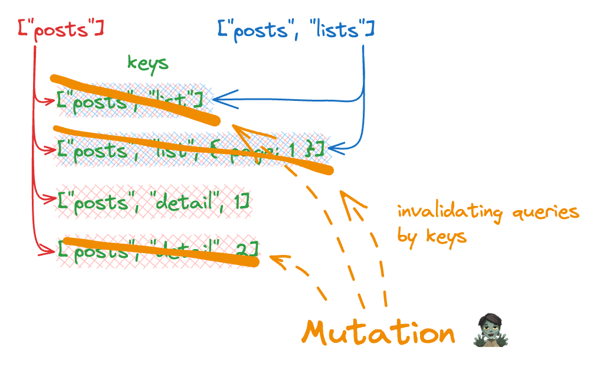

Angular Query Core Concepts
Thursday, 25 January 2024 • 📚 11 min read • back to Blog • edit on Github
This post introduces Angular Query to Angular Developers: why you should care, what is the mental model, how it works and how your applications can benefit from it.
This is the start of an entire series on Angular Query. Expect more articles about it 💪
Follow Angular Query on twitter.
Table of Contents
- TL;DR; - Introduction to Angular Query
- Disclaimer 1: experimental
-
Disclaimer 2:
@ngneat/query - Why would you even care
- What is React/Angular/... Query good at?
- Query
- Cleanups
- Revalidation
- Mutations
- Summary
TL;DR; - Introduction to Angular Query
Angular Query is a state management library highly specialized in synchronizing the server data with client applications. It does this one thing - but does it very well. It removes all concepts and abstractions that are not necessary to accomplish this job. As a consequence, developers become more productive
If your application includes lots of data-tables, grids, listings and other "widgets" which fetch and display server data - you must give Angular Query a try.
Disclaimer 1: experimental
Angular Query is in experimental phase (npm), though it's expected to land a stable release very soon. The current improvements (which I'm a small part of 😍) include providing the most convenient Angular-specific APIs to Angular developers.
However, all the concepts behind Query (core), React Query, Angular Query (and other adapters as well) remain exactly the same. The differences lie only in framework-specific adapters (such as React hooks, Angular signals, etc).
This post is just the first part of a long series I'm working on 🙃. Once the stable version is released, the content will get updated accordingly.
Disclaimer 2: @ngneat/query
Oh, wait, but there already is @ngneat/query. Why would anybody create yet another library?
The answer is simple: the libraries are very similar to each other, serve the same purpose etc. But @ngneat/query creators decided, by design, to diverge from the core Tanstack Query codebase. Angular Query, on the other hand, is part of the Query monorepo and will get all (core) updates instantly. On one hand it's super cool (get all updates
immediately), however on the other hand it introduces limitations (cannot move away from core too much). A classical example of an architectural tradeoff. Ngneat team chose more freedom at the cost of moving away, we chose being in-sync (at the cost of adjusting to the core API).
More detailed reasoning has been brought by Dominik here.
Why would you even care
I'm convincing you that you should invest your time in learning Angular Query, as it will become one of the most important state management solutions within the ecosystem. If not the most important.
So WHY?
Because it did in React ecosystem ⚡️. And since the concept is framework-agnostic and hugely simplifies development and improves DX, no matter what the framework is, same will happen with Angular 🤓. Once you get a grasp of how it works, you will ask yourself "where have we all been all these years?!" 🫢. And probably - for the state management of server's data - you will not want to go back to what you used before 😎.
What is React/Angular/... Query good at?
It's synchronizing the server data with the client app. All query-family libraries are highly specialized in doing this one thing - but doing it right. And abstracted in a way that delivers magnificent DX. It's not (and will never be) a universal, multi-purpose Swiss knife. It's also not trying to be the only state solution within your architecture, e.g. if you need specialized local state solution - go for it! Let the best ones do their job!
So, in other words, React/Angular/... Query is:
- 🔥 automatically fetching the server data
- 🔥 your currently existing components
- 🔥 need (but not earlier)
- 🔥 and if the data could become hypothetically outdated (i.e. stale), it'll get re-fetched automatically
- 🔥 and, of course, shared across all components which need this data
Core Concepts
In order to correctly understand Angular Query, let's build a proper mental model. The main and most fundamental concept is - no sh#t Sherlock! - the Query 😉.
Query
First things first: queries are declarative. In other words, with Angular Query you are not fetching the data. Instead, you declare a dependency:
A component needs (depends on) some external data.
Angular Query will fetch it for you, when it decides to. It's basically yet another form of Inversion of Control.
You can think of a query as if an engine supplied your component with some server data. The engine will store it, will cache it, will maintain timers to determine whether the data should be re-fetched or not. All this is engine's responsibility. Developers only declare the
component -> data dependency.
Query vs manual fetch vs redux
Now, how is that different from manual data fetching or redux-based architecture?
- with manual fetching, you're responsible for running the actual data fetch. You're responsible for when you do it, how you do it, also whether you do it (or not). That's purely imperative.
- with redux architecture (including NgRx; of course it depends on certain setup and/or middlewares or metareducers applied) - most often an action has to be dispatched, so that data fetching could start. This is declarative. But you're additionally responsible for creating and binding the action to whatever reason might cause data loading. All in all that's an improvement indeed, it found its place in the ecosystem and can be used to build complex applications which should do way more than just data loading. But if a certain part of your application only needs to fetch and display the data, the model can be significantly simplified (for the good and the bad). And that's actually the main usecase for Angular Query...
Angular Query is specialized in a very typical and common scenario: a component needs to immediately load and display the data. And the aim is to simplify this task as much as possible. For this reason:
- there's no explicit unsubscribe. Cleanup is done automatically when the component gets destroyed.
- all low-level decisions (when, how, whether, etc.) are made and executed by the engine.
Technically, a component will include an injectQuery call for each query:
@Injectable(...)
export class PostsHTTPService {
// just an HTTP method
getPost = (postId: number) => {
return this.httpClient.get<Post>(
`https://jsonplaceholder.typicode.com/posts/${postId}`,
)
}
}
@Component(...)
export class PostComponent {
// HTTP service
#postsHTTP = inject(PostsHTTPService)
// query
postQuery = injectQuery(() => ({
queryKey: ['post', this.postId()],
queryFn: async (): Promise<Post> => {
return lastValueFrom(#postsHTTP.getPost(this.postId()))
},
}))
//...
}The engine I mentioned above is the QueryClient which will store the data within the QueryCache. The Query Key will be discussed later.
Get notified about blog posts, recordings and workshops!
Subscribe to Ducin.dev and you'll get notified when new content is published. Expect in-depth posts, recordings and online workshops. The topics include: JS/TS, Angular, React and related tech.
Query Client & Query Cache
First of all, in order to effectively use Angular Query it's ok to have no idea what QueryClient and QueryCache is 😉. Vast majority of applications will never need to interact with QueryCache directly (it's handled by QueryClient). The only thing required is to provide the QueryClient (usually,
done once per entire application). This section is intended only to explain the underlying concepts.
Angular Query stores the data in a cache that is later exposed to components via injectQuery. Most often one cache per application is enough. The cache keys are, so called, Query Keys.

Query Keys
A Query Key plays the role of an identifier of a query. Multiple components which require the same data from the same external data source will use a query with the same query key. Query Keys strictly correlate to resources exposed by the server.
Technically, Query Keys are usually arrays containing strings and objects. A couple of examples where REST resources are mapped to Query Keys:
GET /posts-["posts"]GET /posts/<id>-["posts", ID]GET /comments-["comments", { filters: {} }]GET /comments?reviewed-["comments", { filters: { status: "REVIEWED" } }]
It's up to your design how precisely Query Keys will look. A (better) alternative to the above might look like the following:
GET /posts-["posts", "list"]GET /posts/<id>-["posts", "detail", ID]GET /comments-["comments", "list", { filters: {} }]GET /comments?reviewed-["comments", "list", { filters: { status: "REVIEWED" } }]
Query keys are hierarchical. This means, you can invalidate queries (just as you invalidate a cache entry) either individually or a whole group. When invalidating post lists:
queryClient.invalidateQueries({
queryKey: ['posts', 'list']
})only the list entries will be affected. However, when invalidating posts:
queryClient.invalidateQueries({
queryKey: ['posts']
})both lists and details will be affected (and everything with the key starting with posts).

That's also what I meant in the very beginning, that Angular Query is highly declarative.
Whenever you inject a query (probably, to a component), you explicitly state the query key. This way your data hierarchy and relations are well-organized:

Query Keys design, their good practices etc. is yet a different topic - but you should have a solid understanding of the concept by now.
Cleanups
All items within Angular Query make use of DestroyRef in order to clean up or unmount the resources. So it depends on which injector does a certain DestroyRef come from.
In case of QueryClient, the DestroyRef used belongs to Environment Hierarchy's Root Injector. In practice this means that Query Client would get destroyed (precisely: unmounted) when... when the entire application gets destroyed 😉.

In case of each query, injected DestroyRef comes from Element Injectors. When the component gets destroyed, so is the query (precisely: unsubscribed).
But what happens to a Query Key, along with is data, if there are no components which need that data (no active subscribers)?
Query States
As you can simply imagine, each query can be in one of the following states:
isPending, when query'sstatus === 'pending'isError,status === 'error'isSuccess,status === 'success'
As expected, all the statuses are updated underneath. All you do, is make use of those within your components and/or templates.
Revalidation
Before we mentioned that the engine decides when, how and whether to refetch the data. Let's focus on when should the cached data get re-fetched.
In an imperative approach, the developer would just make the call, that's it. However, since Angular Query claims to be declarative (IoC), this is:
- handled by the engine, and
- done under certain circumstances
So what would be the reason to refetch the data? Two main reasons are:
- stale time passed
- data has been changed (mutations)
Angular Query introduces:
- Stale Time: time after the cached data should be re-fetched (pessimistically, once we've loaded the data, it could have already changed on the server; we assume data to be "fresh" for some short time)
- Cache Time: time after the cached data gets entirely removed (it's so old that it's better to have it removed)
Stale While Revalidate
What is super important here, Angular Query implements the Stale While Revalidate technique. It addresses the common problem: when the client app fetches some data, it could have become already outdated by the time user can even see it. Of course, it depends on the the nature of your application and data and, first and foremost, the frequency of changes made to your data - this can vary significantly across different apps. But as a rule of thumb we should take this aspect into account, when designing our app architecture.
All in all, the client device (in our case: the user's browser) has loaded some data that is either already outdated or would become outdated within some time. What to do with that data?
SWR technique uses the potentially STALE data to be displayed, WHILE the new data gets REVALIDATED (reloaded). In other words, show the user the potentially outdated content, but also display the fact (spinner, loader, etc.) that the data is being reloaded.
And what's useful, implementing SWR means that it is the library what is responsible for it - not the developer. You just make use of the technique, as it's already implemented.
It's worth noting that, due to the Stale-While-Revalidate nature of Angular Query, the isFetching flag is also available in all states. That's because, no matter if you're fetching the data initially, refreshing it, coming back to a component that has fetched some data
previously or errored etc (so many edge-cases covered here!) Angular Query might decide to revalidate your potentially stale data. So the action of (re)fetching could take place at any of the states.
Mutations
If we bring all query-related concepts altogether and treat it as one big query concept, then Angular Query brings only one more new concept: a Mutation.
When considering typical CRUD operations, following is a proper match:
- READ - queries
- CREATE, UPDATE and DELETE - mutations
The Mutation, an imperative concept, is a wrapper over modifying server data. Apart from sending the request to the server, it provides functionalities for UI state management, handling optimistic updates, and retrying failed mutations. But first and foremost, a mutation is often bound to certain query keys in order to invalidate them.
Let's revisit our Query Keys hierarchy:
GET /posts-["posts", "list"]GET /posts?page=1-["posts", "list", { page: 1 }]GET /posts/123-["posts", "detail", 123]GET /posts/456-["posts", "detail", 456]
If the user removes Post id:123 (HTTP DELETE /posts/123), then following keys will be affected:
["posts", "detail", 123]- obviously["posts", "list"],["posts", "list", { page: 1 }](potentially) - as they might include the deleted item (note: whether we invalidate optimistically, pessimistically, or we make a check - that's a story for another post)
Following code illustrates usage of mutations:
export class PostComponent {
#queryClient = injectQueryClient()
mutation = injectMutation(() => ({
mutationFn: () =>
lastValueFrom(
this.http.delete<Response>(`https://jsonplaceholder.typicode.com/posts/${id}`),
),
onSuccess: () => {
this.#queryClient.invalidateQueries({
queryKey: ['posts', id, 'comments']
})
},
}))
//...
}The flow within Angular Query's Mutations is to make a set of query keys to be invalidated. Whenever any of those queries become active again (or they are already active) they'd be revalidated. Along with SWR applied.
Let's consider an example mutation where we update a Post entity with id:2. The question is: what resources could be affected? That's a great example of why queries are declarative. Let's consider following keys:
["posts", "detail", 2]- this key definitely has to be invalidated since it is THE Post entity changed["posts", "list", {page: 1}]- maybe our Post(id:2) is included in the first page["posts", "list"]- maybe it's also included within the default Post collection or entire Posts collection (whatever["posts", "list"]is in our app - it's our responsibility to design query keys carefully)

Summary
We've learned the concepts of Queries and Mutations, their responsibilities, and how one affects the lifecycle of another.
The biggest strength of Angular Query (and other Query-family adapters of Tanstack Query) is the little amount of code required to implement synchronization of server state with client applications. Of course, including lots of features most applications need anyway, as well as handling various edge cases. There's still a lot to discuss about the features, the edge cases, and good practices.
Let me know if you appreciated this post either in comments or on twitter/X.